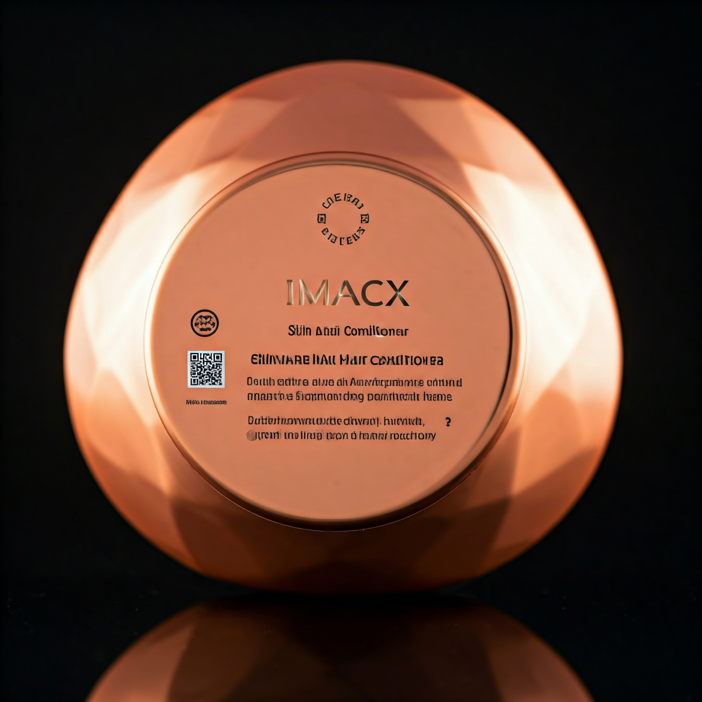

Skin & Hair hyper lux conditioner
free delivery: no delivery charges for all country
size:200grams
Benefits
For Hair: 1. Deep Hydration: Replenishes moisture for soft, silky, and manageable hair. 2. Strengthens Hair: Fortifies strands from root to tip, reducing breakage and split ends. 3. Enhances Shine: Adds a natural, radiant shine for a polished look. 4. Repairs Damage: Revitalizes hair damaged by heat, coloring, or environmental stress. 5. Improves Manageability: Detangles effortlessly for smooth, easy styling. 6. Balances Scalp Health: Soothes and nourishes the scalp, reducing dryness, itchiness, and flakiness. 7. Frizz Control: Tames flyaways and creates a sleek, smooth finish. 8. Promotes Healthy Growth: Supports stronger, healthier hair over time. For Skin: 1. Intense Hydration: Delivers deep moisture, leaving skin soft, plump, and radiant. 2. Improves Texture: Smooths and evens out rough, dull skin for a flawless appearance. 3. Calms Irritation: Soothes redness, sensitivity, and irritation with calming ingredients. 4. Anti-Aging: Boosts elasticity and firmness while reducing the appearance of fine lines and wrinkles. 5. Softens Skin: Provides a velvety-soft finish with a non-greasy feel. 6. Brightens Complexion: Enhances skin’s natural glow and reduces dullness. 7. Protects and Restores: Repairs damage caused by environmental stressors, promoting healthier skin. 8. Multi-Purpose Use: Can be used as a luxurious body cream for head-to-toe hydration. Overall Benefits: Combines high-performance haircare and skincare in one product. Ideal for daily use, offering premium results and an indulgent self-care experience. Leaves hair silky-smooth and skin radiant, catering to all hair and skin types.ingredients for the imacx hyper lux Skin and Hair conditioner :
1. Aqua (Water) 2. Cetearyl Alcohol 3. Behentrimonium Chloride 4. Dimethicone 5. Cyclopentasiloxane 6. Polyquaternium-7 7. Glycerin 8. Panthenol (Pro-Vitamin B5) 9. Phenoxyethanol 10. Ethylhexylglycerin 11. Caprylyl Glycol 12. Disodium EDTA 13. Citric Acid 14. Sodium Benzoate 15. Fragrance (Parfum)
Description
Imacx Hyper Lux Hair and Skin Conditioner Imacx Hyper Lux Hair and Skin Conditioner is the ultimate all-in-one luxury formula, meticulously crafted to provide unparalleled care for both your hair and skin. Infused with a blend of premium oils, rich proteins, and nurturing botanical extracts, this conditioner delivers deep hydration, nourishment, and revitalization, leaving you with visibly smoother, healthier, and more radiant hair and skin. The conditioner works by gently penetrating the hair shaft and skin layers, restoring moisture, and enhancing their natural luster. Its luxurious blend of nourishing oils, including argan and jojoba oils, strengthens and protects hair, while promoting a silky, manageable texture. For the skin, the conditioner provides a boost of hydration, leaving it feeling soft, smooth, and rejuvenated with a glowing, healthy appearance. Designed for daily use, Imacx Hyper Lux Conditioner is ideal for all skin and hair types. Whether you're looking to maintain soft, shiny hair or achieve smooth, glowing skin, this multi-functional conditioner offers the perfect solution. It nourishes both the scalp and skin, addressing dryness, damage, and dullness, while promoting a healthy, radiant shine. With its luxurious formula and impeccable performance, Imacx Hyper Lux Conditioner is more than just a beauty product – it's an experience. Elevate your skincare and haircare routine with this transformative conditioner, and indulge in the feeling of true luxury every day. For a flawless, all-over glow and silky-soft hair, experience the power of Imacx Hyper Lux Hair and Skin Conditioner – your secret to ultimate beauty and radiance.
Usage
Usage of Imacx Hyper Lux Hair and Skin Conditioner For hair: 1. Begin by thoroughly wetting your hair with warm water to open the cuticles. 2. Apply a generous amount of Imacx Hyper Lux Hair and Skin Conditioner to your hair, focusing on the mid-lengths to the ends. 3. Gently massage the product into your hair, ensuring even coverage. For deeper hydration, leave the conditioner in for 2–5 minutes. 4. Rinse thoroughly with cool water to seal the cuticles and lock in moisture, leaving your hair soft, shiny, and manageable. For skin: 1. After cleansing, apply a small amount of Imacx Hyper Lux Hair and Skin Conditioner directly onto your damp skin. 2. Gently massage in circular motions, allowing the product to absorb deeply and hydrate. 3. Focus on areas that may be particularly dry or in need of extra moisture. 4. Use daily for a smooth, glowing complexion. Imacx Hyper Lux Conditioner is designed to work for both hair and skin, so you can indulge in an all-encompassing luxury experience. Whether used on your hair or skin, it provides intense hydration, nourishment, and rejuvenation for a radiant, silky-soft feel. Ideal for all skin and hair types, this conditioner ensures a smooth, polished finish every time you use it.
Warning
Warning for Imacx Hyper Lux Hair and Skin Conditioner For external use only. Avoid direct contact with eyes. In case of contact, rinse immediately with plenty of water. Do not ingest. If swallowed, seek medical attention immediately. Keep out of reach of children. Conduct a patch test before use to ensure no allergic reactions. Apply a small amount to a discreet area of skin and wait 24 hours. If irritation occurs, discontinue use. If irritation or discomfort persists, consult a healthcare professional. Store in a cool, dry place, away from direct sunlight and extreme temperatures.
FAQs
1. What is Imacx Hyper Lux Hair and Skin Conditioner?
Imacx Hyper Lux Hair and Skin Conditioner is a luxurious all-in-one formula designed to nourish, hydrate, and rejuvenate both hair and skin. It contains premium oils and proteins to deliver smooth, manageable hair and glowing, healthy skin.
2. How do I use the conditioner for my hair?
Apply a generous amount to damp hair, focusing on the mid-lengths to ends. Massage gently, leave for 2–5 minutes for deeper hydration, then rinse thoroughly with cool water.
3. Can I use this conditioner on both hair and skin?
Yes, this conditioner is formulated for both hair and skin, providing hydration and nourishment to both for a smooth, radiant finish.
4. Is this conditioner suitable for all hair types?
Yes, Imacx Hyper Lux Conditioner is suitable for all hair types, including dry, oily, and damaged hair, providing deep moisture and restoration.
5. Is this conditioner suitable for sensitive skin?
The conditioner is designed to be gentle, but we recommend doing a patch test before use, especially for sensitive skin.
6. How often should I use the conditioner?
For optimal results, use Imacx Hyper Lux Hair and Skin Conditioner daily or as needed, depending on your hair and skin’s moisture requirements.
7. Does it leave hair greasy?
No, this conditioner is designed to hydrate without weighing down your hair, leaving it soft, shiny, and manageable without a greasy feel.
8. Can this conditioner be used on color-treated hair?
Yes, it is safe to use on color-treated hair, as it helps nourish and protect without stripping color.
9. Can I use it if I have dry skin?
Yes, the conditioner provides intense hydration and is ideal for dry skin, leaving it feeling smooth and moisturized.
10. Can I use this conditioner in place of my regular moisturizer?
Yes, you can use it as an all-in-one product for both your skin and hair. However, if you need more targeted skincare, consider adding a dedicated moisturizer for face care.
11. Will it help with split ends or damaged hair?
Yes, the conditioner helps nourish and repair damaged hair, reducing split ends and promoting healthier, smoother strands.
12. How long will one bottle last?
The duration depends on how frequently you use the product, but with regular daily use, one bottle should last around 3–4 weeks.
13. Is this conditioner cruelty-free?
Yes, Imacx Hyper Lux Hair and Skin Conditioner is cruelty-free and not tested on animals.
14. Is this product safe for pregnant women?
We recommend consulting with your healthcare provider before using any new product during pregnancy to ensure safety for you and your baby.
15. Can I use this conditioner with other hair or skincare products?
Yes, Imacx Hyper Lux Conditioner can be used alongside your regular skincare and haircare products for enhanced results. Just make sure to follow your normal routine after applying it.
Customer Reviews
Olivia Smith
Rating: ★★★★★
This conditioner is pure luxury! My hair feels incredibly soft, and my skin has a healthy glow. It’s amazing to have one product that works for both.
James Peterson
Rating: ★★★★☆
I love how manageable my hair feels after using this conditioner. It’s also great for my dry skin. Just wish the bottle was a bit bigger for the price.
Sophia Johnson
Rating: ★★★★★
Imacx Hyper Lux Conditioner is a game-changer! My hair has never been this shiny, and my skin feels so smooth. Definitely worth it!
Lucas Brown
Rating: ★★★☆☆
The conditioner works well for my hair, making it soft and easy to style. However, it didn’t hydrate my skin as much as I expected.
Ava Martinez
Rating: ★★★★★
This is the best conditioner I’ve ever used! My skin feels velvety soft, and my hair has a salon-like finish. Highly recommend!
Ethan Davis
Rating: ★★★★☆
The scent is amazing, and it leaves my hair and skin feeling fresh and hydrated. I’m deducting one star because it took a while to see results on my skin.
Isabella Moore
Rating: ★★★★★
This conditioner is a miracle in a bottle! It has transformed my dry, frizzy hair into soft, silky strands, and my skin feels so hydrated.
Henry Thompson
Rating: ★★★★☆
I love how smooth and shiny my hair looks after using this. It also works well on my skin, though I wish the scent lasted longer.
Charlotte White
Rating: ★★★★★
My hair feels so soft and manageable now, and my skin is glowing! Imacx Hyper Lux Conditioner is worth every penny.
Michael Taylor
Rating: ★★★☆☆
It works well on my hair, but I didn’t see much improvement on my skin. Still, my hair feels healthier than ever.
Amelia Clark
Rating: ★★★★★
Absolutely love this conditioner! My hair is silky smooth, and my skin feels so soft and nourished. Highly recommend.
Daniel Wilson
Rating: ★★★★☆
This product is fantastic! It makes my hair look like I just left the salon. My skin is soft, though it takes a few uses to see results.
Emily Lewis
Rating: ★★★★★
The scent is divine, and the results are incredible! My hair and skin have never felt this luxurious. Perfect for daily use.
Jack Martinez
Rating: ★★★★☆
It works great for my thick hair, leaving it tangle-free and shiny. My skin feels soft too, but I prefer it more for haircare.
Sofia Hall
Rating: ★★★★★
This conditioner has replaced so many products for me. It’s truly an all-in-one solution. My skin glows, and my hair shines beautifully!
Benjamin King
Rating: ★★★☆☆
It worked well on my scalp and hair, but my skin didn’t feel as hydrated as I expected. Still a good product overall.
Lily Scott
Rating: ★★★★★
Imacx Hyper Lux Conditioner is fantastic! My hair is silky smooth, and my dry skin looks radiant. I love the luxurious feel.
Oliver Harris
Rating: ★★★★☆
This product does wonders for my hair, and my skin feels soft, though I wish it had more hydration for colder months.
Grace Walker
Rating: ★★★★★
My hair is incredibly soft, and my skin feels smooth and supple. This is hands down the best conditioner I’ve ever used!
William Baker
Rating: ★★★★☆
I’ve been using this conditioner for a month now, and my hair has improved significantly. My skin also feels nourished, but the results take time.
Chloe Adams
Rating: ★★★★★
This conditioner is pure perfection. My hair has never looked this shiny, and my skin feels so smooth and pampered. A must-have!
Features
- Fast Delivery
- Happy Customers
- Eco-Friendly Packaging
Need Help? Contact Us:
📞 Phone: +918452939172
📧 Email 1: macxyy35@gmail.com
📧 Email 2: macxyy12@gmail.com
📸 Instagram: Follow us
Terms& conditions: read terms& conditions applied
returns & refunds: check returns and refunds
privacy policy: read privacy policy
faq: check faq bot page